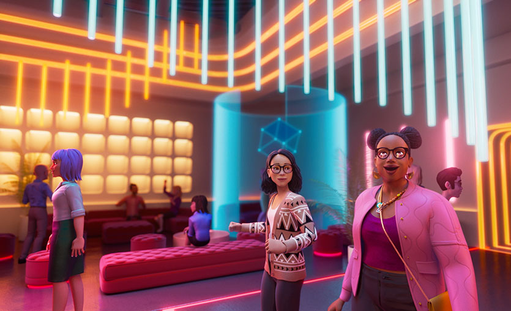

Metaverse, dijital ve fiziksel dünyaları birleştiren büyük bir evreni temsil eder. Mark Zuckerberg’in bu kavram üzerinde yaptığı yatırımlarla, metaverse daha geniş bir kitleye ulaşmıştır. Kullanıcılar bu evren içinde farklı kimlikler ve roller üstlenebilir.
Metaverse dünyasına katılmak için teknolojik araçlara ihtiyacınız olacaktır. Ayrıca sanal projelerin içinde bulunabilmek için gelişmiş bir dijital cüzdan gereklidir.
Metaverse evreninde oluşturacağınız avatar ile var olursunuz. Bu evrende AR ve VR teknolojileriyle fiziksel hayatta ne yapıyorsanız sanal ortamda da aynı faaliyetleri yapabilirsiniz. Microsoft CEO’su Satya Nadella Metaverse ile ilgili yaptığı açıklamasında 2 sene sonra tüm toplantıların bu evrende yapılacağını söylemiştir. Bunun yanında, bu evrende avatarınızla konserlere katılabilir, alışveriş yapabilir, arkadaşlarınızla görüşebilirsiniz.
Meteverse evreninde para birimi ise oldukça önemlidir. Bu alanda ortaya çıkan birçok proje vardır. Hangisinin hayatta kalacağı ve gelecek bu alanda para birimi olarak kullanılacağı belirsizdir.